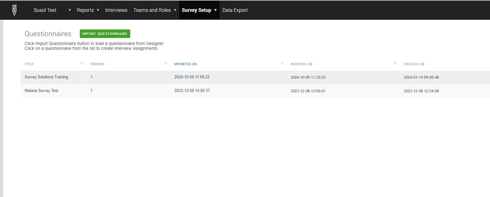
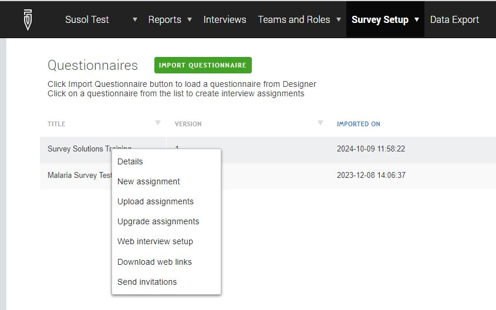
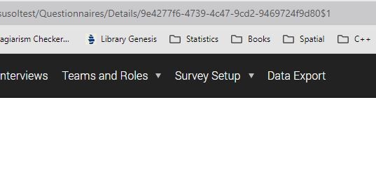

import requests
from ssaw import Client, ExportApi, QuestionnairesApi, models
from time import sleep
import configparser
import os2 Data Download
2.1 Introduction
In the ever-evolving landscape of data collection, Survey Solutions stands out as a powerful and versatile tool designed to streamline the process. Developed by the World Bank, this innovative platform enables researchers and organizations to gather high-quality data efficiently and effectively. With its user-friendly interface and robust features, Survey Solutions empowers field staff to conduct surveys, manage complex questionnaires, and ensure data integrity in real-time.
One of the standout capabilities of Survey Solutions is its robust API, which allows for seamless integration with other systems and applications. This feature enables users to automate data collection processes, enhance data management, and facilitate real-time data access, making it easier to incorporate Survey Solutions into existing workflows.
By harnessing the capabilities of Survey Solutions, users can customize surveys to meet specific research needs, collect data through mobile devices, and utilize advanced tools for monitoring and data analysis. This flexibility not only enhances the quality of data collected but also accelerates decision-making processes in various sectors, including healthcare, education, and social research.
Whether you’re a seasoned researcher or a novice data collector, Survey Solutions provides the resources and support necessary to transform data collection into a seamless and impactful experience. Embrace the future of data gathering with Survey Solutions—where precision meets efficiency.
2.2 Survey Solution Accounts
In Survey Solutions, there are six main types of user accounts, each with different roles and responsibilities. Here’s a breakdown:
- Administrator:
Role: Manages the technical aspects of the Survey Solutions server.
Responsibilities:
Set up and configure the Survey Solutions server.
Manage server performance, updates, and backups.
Handle user management (creation and deletion of accounts).
Ensure security, including password management and system access.
Monitor server health and log files.
- Headquarters (HQ):
Role: Manages the entire survey process, including questionnaire management, assignments, and overall data flow.
Responsibilities:
Create and manage survey assignments.
Monitor survey progress and interview status.
Access all collected data.
Administer users and roles.
Handle questionnaire uploads and server management.
- Supervisor:
Role: Oversees fieldwork operations, manages interviewers, and reviews their work.
Responsibilities:
Review completed interviews submitted by interviewers.
Approve or reject interviews.
Manage interviewers and assignments within their team.
Monitor the status of interviews and progress.
- Interviewer:
Role: Conducts interviews and collects data in the field using a tablet or computer.
Responsibilities:
Conduct face-to-face interviews with respondents.
Upload collected data to the server for review.
Communicate with supervisors on any issues related to interviews.
- Observer:
Role: Has read-only access to monitor the progress of the survey without the ability to make changes.
Responsibilities:
View interviews and their status.
Generate reports and monitor survey performance.
Cannot edit or approve interviews.
- API User:
Role: Provides programmatic access to Survey Solutions through its API for automation and integration purposes.
Responsibilities:
Fetch survey data via the API for external analysis.
Automate the survey workflow by integrating with other systems (e.g., data processing or visualization tools).
Create assignments, retrieve reports, and manage users programmatically.
Of great importance for data management workflow is the API User. You need to talk to the Administrator, who most of the times is either system administrator or programmer, who set up and configured the Survey Solutions server to create for you an API user.
2.3 Survey Solution API
Survey Solutions includes a powerful and flexible API which allows automating some tasks and allows our users to build larger systems, which may compliment Survey Solutions to achieve larger goals.
Some examples of use could be:
schedule periodic export of collected data
an external dashboard or monitoring and reporting system, which updates some indicators every night and publishes them to a website, or
an external checking and validation system which verifies collected data against some external sources of information and rejects automatically the incorrect interviews, or
an integrated system, which utilizes Survey Solutions for data collections tasks and a statistical package for continuous analysis,
facility management, inventory and price monitoring systems, etc, etc.
For the purposes of this tutorial, our focus will be on the first use case.
2.3.1 API Clients
There are a number of API clients for Survey Solutions. They are listed below.
| API Clients | Maintainer | Specific Name | Language |
|---|---|---|---|
| .NET package | Andrii Kozhyn | SurveySolutionsClient | C# |
| PowerShell module | Zurab Sajaia | SSAW | Powershell |
| Python package | Zurab Sajaia | ssaw | Python |
| R package | Michael Wild | SurveySolutionsAPI | R |
| R package | Arthur Shaw | susoapi | R |
| R package | Lena Nguyen | SuSoAPI | R |
| Stata package | Sergiy Radyakin | susoapi | Stata |
For more details about each of the clients you check here.
2.4 Python Package
I use ssaw Python package as a Survey Solutions API wrapper. It is easy to use and very flexible. We’ll focus on key data management procedures, but full details are in the online documentation.
2.4.1 Installation
To install ssaw, simply run this command in your terminal:
pip install ssaw2.4.2 Modules
I use the following modules in data management pipeline especially when working with Survey Solutions:
2.4.3 Connect to server
To communicate with Survey Solutions server, you first need to instantiate a client. You remember the API user you created or was created for you? It is necessary at this point. To connect to Survey Solution you need four pieces of information i.e.
URL for the server
API username
API password
Name of the work space
def check_net(url='http://www.google.com/', timeout=5):
try:
_ = requests.head(url, timeout=timeout)
print(f'Connection available on: {url}')
return True
except requests.ConnectionError:
return False
net_available = check_net()Connection available on: http://www.google.com/if net_available:
client = Client(url="None",
api_user="None",
api_password="None",
workspace='primary')
else:
print("Internet not available")- Parameters
-
url (
str) – URL of the headquarters appapi_user (
Optional[str]) – API user nameapi_password (
Optional[str]) – API user passwordtoken (
Optional[str]) – Authorization tokenworkspace (
str) – Name of the workspace. If None, “primary” will be assumed
There are two ways to provide these parameters.
One is to hard-code them in the script as shown below:
if net_available: client = Client(url="90-12-34-26", api_user='JohnDoes', api_password='Supersecret', workspace='primary') else: print("Internet not available")
This method is insecure for handling sensitive data. If you push this script to a public repository, anyone can access these details. Best practices in data management require keeping sensitive information secure and out of reach of unauthorized individuals.
Using config files
A more secure way to handle sensitive data is by using configuration files. Instead of hard-coding credentials directly in the script, you can store them in a separate config file and load them securely. There are several common formats for configuration files such as .ini files (Initialization files), .json files (JavaScript Object Notation), .yaml files (YAML Aint Markup Language), .properties files (Java-style-value pair format). I decided to use .ini because they are lightweight and easy-to-use configuration files that provide a straightforward way to store settings in a simple key-value format. They allow for comments and enable dividing the configuration into sections.
# Initialize the parser config = configparser.ConfigParser() if not os.path.exists('config.ini'): # Add sections and set values for Survey Solutions config['susol'] = { 'url': None, 'api_user': None, 'api_password': None, 'workspace': None, 'quiz_id': None } # Add the email address and password config['email'] = { 'email_address': None, 'pass_word':None } # Add the email address and password config['mysql'] = { 'host': None, 'database': None, 'user': None, 'password': None } else: config.read('config.ini') # Retrieve the details url_ss = config['susol']['url'] apiuser = config['susol']['api_user'] passwd = config['susol']['api_password'] wkspace = config['susol']['workspace'] quizid = config['susol']['quiz_id'] # Access credentials if net_available: try: client = Client(url=url_ss, api_user = apiuser, api_password=passwd, workspace=wkspace) except: client=None else: client=None print("Internet not available")
To prevent sensitive data from being exposed, follow these security practices:
Add Config File to .gitignore: Ensure the config file is not included in version control (e.g., GitHub) by adding it to .gitignore.
Restrict File Permissions: Limit who can read the config file by changing its permissions so only authorized users can access it.
if client:
try:
for q in QuestionnairesApi(client).get_list(questionnaire_id=quizid):
print(q.title, q.version)
except:
print("Unable to connect to server")
else:
print("Unable to connect to the server")Survey Solutions Training 1By this time you will get the questionnaire titles and versions. If not, you may need to check that you have keyed in the correct credentials and also got the questionnaire id, work space right.
2.4.4 Export Data
The export module contains methods to find and download an already generated data package, or trigger and manage a new generation job.
Accessing Questionnaire Id Web Interface
Below are steps to access your questionnaire id:

Log in into the Survey Solution and pick the right workspace 
Click on desired questionnaire then select details 
Locate the questionnaire at the address bar
Between the Details/ and $ sign is the id.
Accessing Questionnaire Id Using API
if client:
for q in QuestionnairesApi(client).get_list():
print(q)
else:
print("You did not connect to the server")Questionnaire(id=f144e3a11dfc4e54a7fd28716d3a32e0$1, questionnaire_id=f144e3a11dfc4e54a7fd28716d3a32e0, version=1, title=Malaria Survey Test, variable=mal_survey)
Questionnaire(id=9e4277f647394c479cd29469724f9d80$1, questionnaire_id=9e4277f647394c479cd29469724f9d80, version=1, title=Survey Solutions Training, variable=ssolutions_training)if client:
try:
export_object = models.ExportJob(quizid,export_type='STATA')
ExportApi(client).start(export_object, wait=True)
ExportApi(client, workspace=wkspace).get(questionnaire_identity=quizid,
export_type='STATA',
show_progress=True,
generate=True,
export_path='data/rawdata')
except:
print("Unable to connect to the server")
else:
print("You did not connect to server")Unable to connect to the server2.5 Summary
Below is a summary of the steps you need to undertake in order to download data from Survey Solutions server to your machine.
- Create API User: Ensure you have an API user created.
Gather Information: Collect the following:
URL
API username
API password
Workspace
Questionnaire ID
Install
ssawModule: Use Python to install thessawmodule.Create .ini Config File: Store all necessary information for the Survey Solutions Server.
Run the Script: Execute the script to download the data!
2.6 Download Script
The complete script to download data is given below:
# ----- Modules required
import requests
from ssaw import Client, ExportApi, QuestionnairesApi, models
from time import sleep
import configparser
import os
# ---- Define functions
def check_net(url='http://www.google.com/', timeout=5):
try:
_ = requests.head(url, timeout=timeout)
print(f'Connection available on: {url}')
return True
except requests.ConnectionError:
return False
# ---- Create configuration if not there or load
config = configparser.ConfigParser()
if not os.path.exists('config.ini'):
# Add sections and set values for Survey Solutions
config['susol'] = {
'url': None,
'api_user': None,
'api_password': None,
'workspace': None,
'quiz_id': None
}
# Add the email address and password
config['email'] = {
'email_address': None,
'pass_word':None
}
# Add the email address and password
config['mysql'] = {
'host': None,
'database': None,
'user': None,
'password': None
}
else:
# Read the config file
config.read('config.ini')
# ---- Retrieve all the necessary information
url_ss = config['susol']['url']
apiuser = config['susol']['api_user']
passwd = config['susol']['api_password']
wkspace = config['susol']['workspace']
quizid = config['susol']['quiz_id']
# ---- Check whether there is internet connectivity then instantiate Client class
net_available = check_net()
if net_available:
try:
client = Client(url=url_ss,
api_user = apiuser,
api_password=passwd,
workspace=wkspace)
except:
client=None
else:
client=None
print("Internet not available")
# ---- Check whether you are able to communicate with the server
if client:
try:
for q in QuestionnairesApi(client).get_list(questionnaire_id=quizid):
print("Success! You have connected successfully to the server!")
print(q.title, q.version)
except:
print("Unable to connect to server")
else:
print("Configurations need to be checked!")
# ---- Export Data and Download
if client:
try:
export_object = models.ExportJob(quizid,export_type='STATA')
ExportApi(client).start(export_object, wait=True)
ExportApi(client, workspace=wkspace).get(questionnaire_identity=quizid,
export_type='STATA',
show_progress=True,
generate=True,
export_path='data/rawdata')
except:
print("Unable to create export object")
else:
print("You did not connect to server")